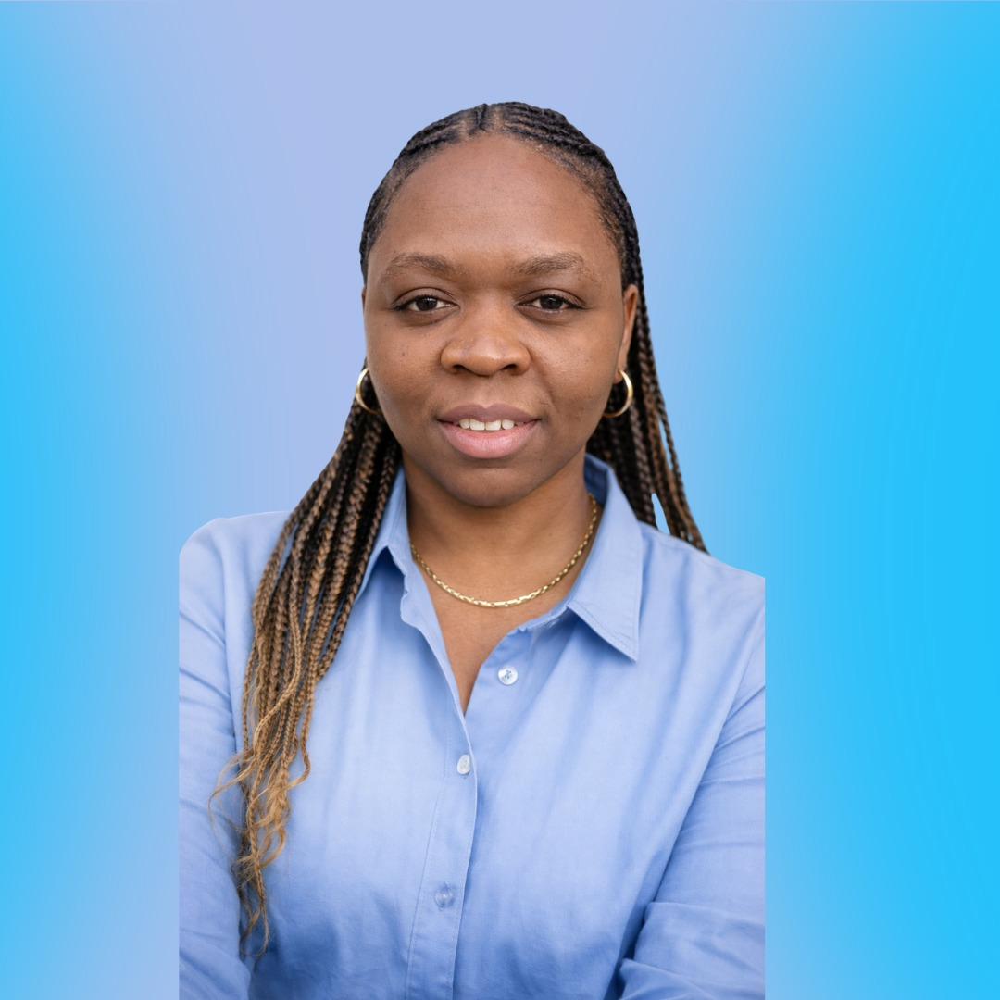

PhD Candidate · Statisticienne · Économiste
Je transforme des données complexes en insights clairs grâce aux modèles Bayésiens hiérarchiques, à l'économétrie et à l'apprentissage statistique.
Conférences internationales
Années de doctorat
Outils statistiques
Doctorante en statistiques appliquées à l'Université de Montréal, je me spécialise dans les modèles Bayésiens hiérarchiques semi-paramétriques spatio-temporels pour la prédiction, le regroupement aléatoire et l'analyse de données mixtes en haute dimension.
Titulaire d'un diplôme d'Ingénieure Statisticienne Économiste (ISE) de l'ISSEA (Cameroun), j'ai acquis une solide expérience en analyse de données, en politique publique et en recherche académique.
PhD Université de Montréal
ISE — ISSEA, Cameroun
Bachelor Mathématiques, Dschang
Français — Courant
Anglais — Courant
Montréal, Canada
Origine: Cameroun
Développement de modèles semi-paramétriques pour la prédiction, l'analyse de relations spatiales et le regroupement aléatoire sur des données mixtes en haute dimension. Implémentation en R, Python et C++.
Thèse sur l'analyse spatiale de la transmission du VIH/SIDA en Afrique, combinant méthodes géostatistiques et données épidémiologiques.
Modélisation de l'impact des programmes de fidélisation sur le comportement de consommation et le taux de désabonnement (Orange Cameroun).
Analyse de données orientée politique, méthodes d'échantillonnage avancées pour des études à grande échelle.
Centre de Recherches Mathématiques, Montréal, Canada
Ottawa, Canada
Montréal, Canada
Société statistique du Canada, Ottawa
Montréal, Canada
Québec, Canada
Université de Montréal · 2021 – Présent
Université de Montréal · 2022 – Présent
Orange Cameroun · Douala · 2019
Intéressé·e par une collaboration, une consultation, ou simplement pour échanger sur la recherche ?
dguedia@gmail.com
dorchelle.atonzongguedia@umontreal.ca
+1 (438) 995-2432